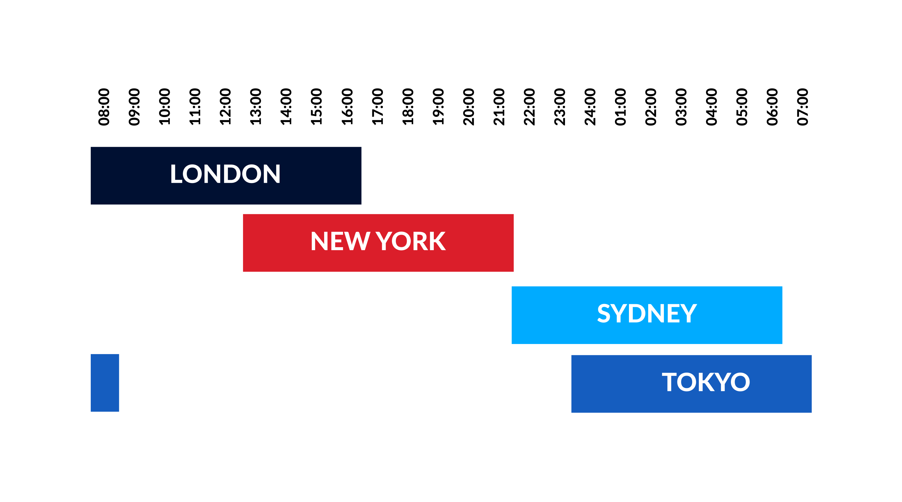

Sessions
Four Main Sessions
There are four respective trading sessions. You have London, New York, Sydney, and Tokyo.
You have different trading sessions because we have different regions all around the world. Those regions wake up and operate at different times throughout the day.

Overlap
Session overlap is about as simple as it sounds. When you have two sessions, we'll use London and New York for example. London begins at 2AM and ends at 11AM. New York Starts at 8AM and ends at 5PM. In the time that London is active, New York will also be active for some of that duration. That duration is the session overlap.
This is important because when there are traders from both sessions actively trading, you have more volume in the markets, making for the stronger pushes that you want to be in.
